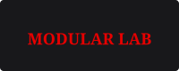
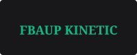

Palco Sonoridades Cinéticas
Sessão de abertura com improvisação de ritmos polimétricos a 138 BPM, utilizando sensores piezoelétricos na tarola e pratos.
Equipamento: Eurorack 9U + Kit Acústico Mapex Birch
Fusão visceral entre bateria acústica piezoelétrica, sistemas modulares Eurorack 9U e síntese analógica contínua. Sem computadores portáteis no palco.

Pesquisa pioneira sobre a conversão de energia cinética mecânica em voltagem de controlo analógica contínua (CV):

No âmbito da unidade curricular de WD101 e do festival Drumtiks '26, o DJ Warp é o pioneiro da percussão controlada por voltagem analógica pura. Rejeitando os vulgares controladores MIDI via USB e a dependência de computadores em palco, o artista utiliza transdutores piezoelétricos de alta sensibilidade acoplados à madeira dos tambores acústicos.
Cada impacto de baqueta produz um impulso elétrico direto que aciona circuitos Envelope Follower e Trigger-to-Gate, modulando filtros de transístores sem qualquer latência perceptiva. Como o próprio afirma:
O fluxo de voltagem elétrica num circuito analógico espelha o fluxo de uma página Web: cada elemento responde à geometria e à pressão do meio que o envolve.
Três intervenções acústicas desenhadas especificamente para a arquitetura industrial do Parque da Cidade do Porto:
Sessão de abertura com improvisação de ritmos polimétricos a 138 BPM, utilizando sensores piezoelétricos na tarola e pratos.
Experiência imersiva em som surround octofónico. Frequências sub-graves puras moduladas em tempo real por voltagem de controlo (CV).
Masterclass aberta a estudantes e músicos sobre construção de microfones de contacto caseiros e integração com mesas de mistura.
Explore as gravações analógicas diretas de estúdio e os registos visuais captados durante os ensaios no Porto:
Gravação direta estéreo do master analógico. Mistura sem compressão digital.
Demonstração do atraso acústico zero na conversão de toque mecânico em impulso CV.
Contentor responsivo utilizando a propriedade moderna aspect-ratio: 16 / 9; para prevenir quebras visuais e saltos de layout (CLS).
Exemplo pedagógico (conforme guião EX2 e Hicks, 2004): contentor com altura máxima fixa (max-height: 8rem;) e barra de rolamento automática (overflow: auto;):
Teoria do Box Model no CSS: Cada elemento no HTML gera uma caixa retangular composta por quatro camadas concêntricas: Conteúdo (Content), Espaçamento Interno (Padding), Borda (Border) e Margem Externa (Margin).
Ao utilizar box-sizing: border-box;, as dimensões totais declaradas em width e height incluem tanto o preenchimento como as bordas, garantindo previsibilidade no dimensionamento responsivo.
Quando o volume do texto ultrapassa o espaço vertical estipulado pela propriedade max-height, a diretiva overflow: auto; cria barras de deslocamento locais sem quebrar o layout exterior da página.
Entidades e laboratórios de investigação sonora que apoiam a produção do DJ Warp. Passe o cursor sobre os logótipos para testar os filtros gráficos CSS (conversão de escala de cinzentos para cor saturada):


Para reservas de workshops de percussão analógica, parcerias académicas ou acreditações de imprensa:
📧 Email Oficial: bilhetes@drumtiks.org
📞 Linha de Apoio FBAUP: +351 220 000 000